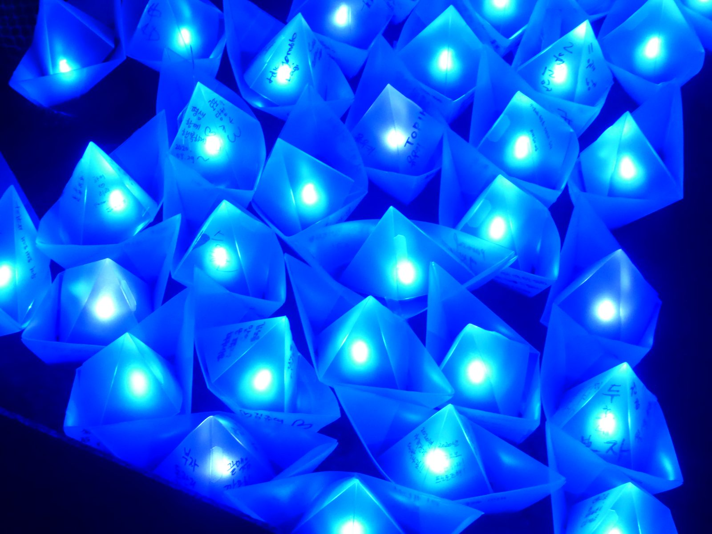

Festivals · Culture
Seoul Lantern Festival 2026
- Dates
- –
- Venue
- Cheonggyecheon (Cheonggye Plaza to Samil Bridge)
- Location
- Seoul, South Korea
- Format
- In-person (free)
- Category
- Culture
- Industry
- Light art / culture
- Expected attendance
- 3,400,000
- Official website
- https://festival.seoul.go.kr/festival/main/festivalView.do?festacode=983
About
Dates are local to the host city (Korea Standard Time, UTC+9).
Topics: lanterns, light art, media art, Hanji, night festival.
Official Seoul city festival portal: '최근 3년 평균 방문객 수가 340만명에 달하는' (average of about 3.4 million visits over the last three editions; open-air, free, counted visits).
Sources
- Official — https://festival.seoul.go.kr/festival/main/festivalView.do?festacode=983